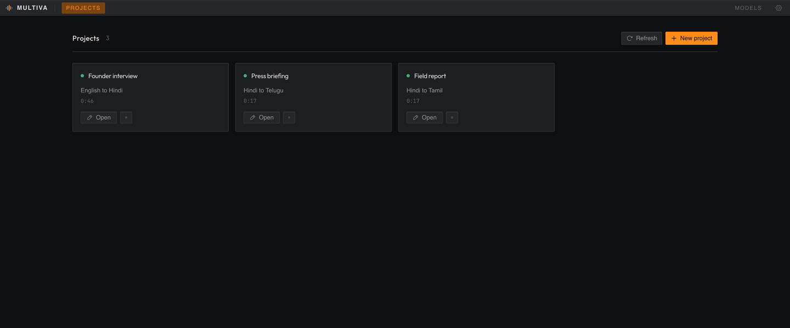

1.0
Starting the engine
© 2026 Multiva. Everything runs on this machine; no audio or video leaves it. Speech recognition by Whisper. Translation by NLLB-200. Voice synthesis by IndicF5. Lip sync by Wav2Lip.
